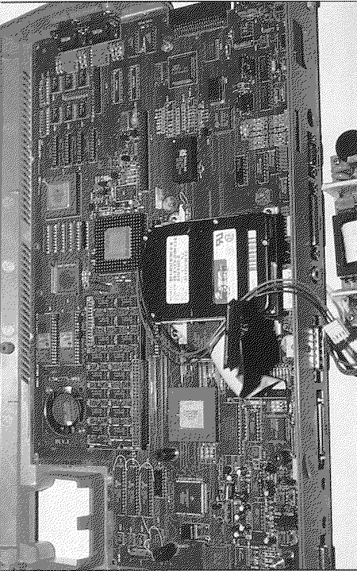

Previous
Next
TOC
Der Sparrow
Sparrow war der Entwicklungsname des Falcon030. Unten sehen Sie ein
Bild der Sparrow Platine (noch mit Fädeldraht versehen, aber lauf-
fähig) wobei die Customchips wie Combel, SDMA und Videl noch in PGA-
Ausführung vorhanden sind (also noch nicht zur Serienproduktion reif
waren). Der Festplattentreiber meldete sich auch mit SPARROW und be-
nutze den Blitterchip für den Datentransfer zur IDE Festplatte. Die
Speicherkarte war damals schon beschlossene Sache und so wurde leider
auf SIMM Sockel verzichtet. Das TOS 4.00 sitzt in dieser Entwick-
lungsstufe noch in zwei Megabit großen DIL Eproms neben dem Lüfter
und die anordnung der ICs unterscheidet sich auch noch von den Se-
rienplatinen. Ganz früh gab es noch ein TOS 2.07, wobei die VDI Rou-
tinen (für die Bildschirmausgabe) von der Festplatte nachgeladen
wurden.

Kapitel Der Sparrow, Seite 1